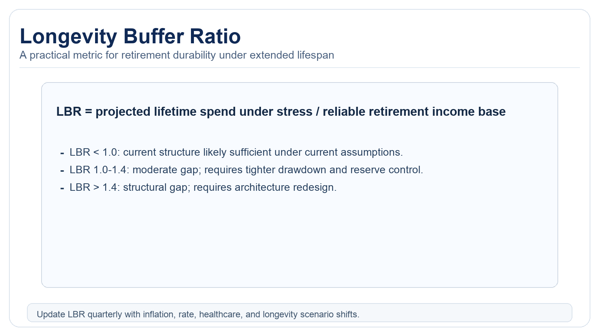

The Retirement Age Lie: Why Your Target Number Is Probably Wrong in 2026
The classic retirement target assumes lower rates, lower service inflation, shorter longevity, and simpler housing decisions than most households face now.
The retirement conversation still relies on static targets like “$1 million” or “$2 million.” These labels were always rough heuristics. Under 2026 conditions, they are often misleading. High financing costs, persistent service inflation, healthcare uncertainty, and longer planning horizons can make nominal targets look comfortable, even when practical withdrawal plans remain fragile. The disconnect arises from outdated assumptions about interest rates, inflation composition, and demographic trends that no longer align with the current macroeconomic environment.

Where Legacy Rules Break
The 4% shorthand is context-dependent
Withdrawal rules depend on market valuations, inflation paths, and the timing of market returns. They are not fixed guarantees across every start year or market condition. The original 4% rule emerged from a period of higher real returns and lower volatility; applying it mechanically today ignores shifts in equity risk premiums and bond yields. Investors must instead model withdrawal sustainability using forward-looking return distributions and stress scenarios.
Housing remains a major uncertainty channel
Downsizing plans can fail when mortgage rates remain elevated or local markets stay illiquid. Housing can stabilize or destabilize retirement depending on financing assumptions and property maintenance burden. Geographic mobility constraints, transaction costs, and tax implications further complicate housing transitions. Retirees should quantify the flexibility in their home equity and test its liquidity under adverse economic conditions.
Healthcare inflation compounds asymmetrically
Medical costs are not optional spending. Their variance is high and often poorly captured in simplistic retirement calculators. Out-of-pocket maximums, long-term care needs, and prescription drug inflation can deviate significantly from general CPI measures. A robust plan incorporates actuarial estimates of healthcare expenses by age cohort and includes buffers for unexpected medical events.
Longevity changes denominator math
Planning horizons extending into the 90s require longer compounding and stricter drawdown governance. A number that supports 20 years may fail over 35 years. Increasing life expectancies necessitate more conservative withdrawal rates and greater emphasis on spending plans that account for longer lifespans. Retirees must also consider the risk of cognitive decline impacting financial decision-making in later years.
Three Profiles, Same Portfolio, Different Outcomes
An early retiree at 55, a traditional retiree at 65, and a late starter at 70 can each enter retirement with the same nominal portfolio and still face very different success rates. The driver is not just total assets. The driver is sequence exposure, spending rigidity, and healthcare shock sensitivity. Early retirees face longer sequence risk windows and greater exposure to inflationary periods, while late retirees may encounter higher healthcare costs per remaining year. Each profile demands tailored asset allocation and withdrawal strategies reflecting their unique risk exposures.
Retirement quality metric: resilient income architecture and adaptive drawdown process, not a static account headline. Effective retirement planning measures success through income stability, flexibility during downturns, and capacity to absorb unforeseen expenses, rather than portfolio value at a single point in time.
Longevity Buffer Ratio (LBR)

LBR can be defined as projected lifetime spending under adverse assumptions divided by a reliable retirement income base. An LBR above one implies drawdown reliance. A materially elevated LBR implies structural redesign: extended earning horizon, spending redesign, housing strategy reset, or larger ownership base. Calculating LBR requires Monte Carlo simulations incorporating longevity risk, inflation shocks, and correlated asset failures. This ratio serves as a dynamic indicator of plan robustness rather than a one-time assessment.
Practical Framework For 2026-2030
1) Run regime stress, not average-return models
Model inflation persistence, adverse market sequences, and healthcare cost shocks before setting withdrawal rules. Incorporate models that account for structural breaks in market behavior and inflation dynamics. Stress testing should include stagflation scenarios and prolonged equity bear markets to evaluate plan durability.
2) Separate essential from elective spending
Withdrawal plans become more robust when essential obligations are covered by stable income channels. Implement a tiered spending strategy that prioritizes guaranteed income sources for non-discretionary expenses while maintaining flexibility in discretionary categories. This approach reduces sequence risk by minimizing forced portfolio sales during market downturns.
3) Keep housing optionality explicit
Do not assume frictionless downsizing or refinancing. Include liquidity costs and timeline risk. Develop contingency plans for housing transitions, including rental alternatives and reverse mortgage evaluations. Quantify the opportunity cost of home equity and model its impact on overall portfolio sustainability under various housing market conditions.
4) Review quarterly, recalibrate annually
Retirement strategy is a dynamic system. Static plan documents degrade quickly under macro change. Implement a formal review process that assesses spending patterns, portfolio performance, and health status against predefined triggers. Annual recalibration should adjust withdrawal rates, asset allocation, and insurance coverage based on realized outcomes and updated longevity estimates.
5) Incorporate longevity hedging instruments
Evaluate annuities, longevity insurance, and other risk-pooling vehicles to mitigate extreme age risks. These instruments provide conditional protection against outliving assets and can improve portfolio efficiency when properly structured. Pricing and selection should be based on actuarial fairness and counterparty risk assessment.
6) Model tax efficiency across decumulation phases
Optimize withdrawal sequencing across taxable, tax-deferred, and tax-free accounts to minimize lifetime tax burden. Coordinate Required Minimum Distributions with discretionary withdrawals to smooth tax brackets over time. Incorporate state tax considerations and potential legislative changes into multi-year tax planning scenarios.
Source List
Federal Reserve Bank of St. Louis. (2026). Interest-rate and inflation series.
BLS. (2026). Consumer Price Index and service-inflation components.
Social Security Administration. (2025). Life expectancy and actuarial tables.
Fidelity. (2024). Healthcare cost projections for retirement context.